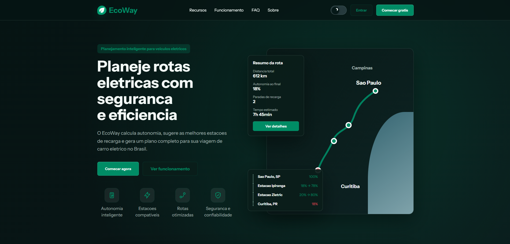
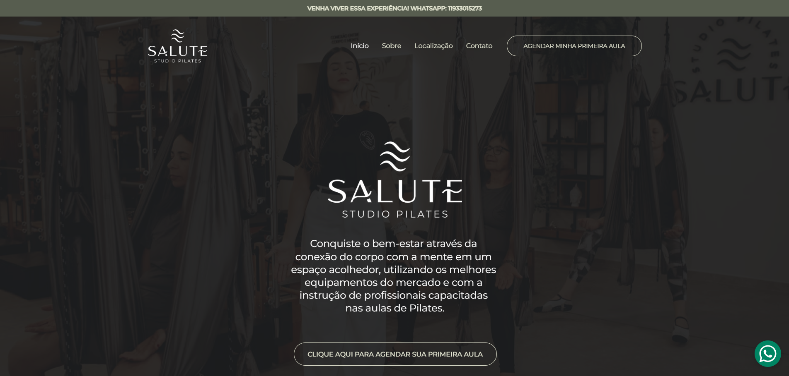
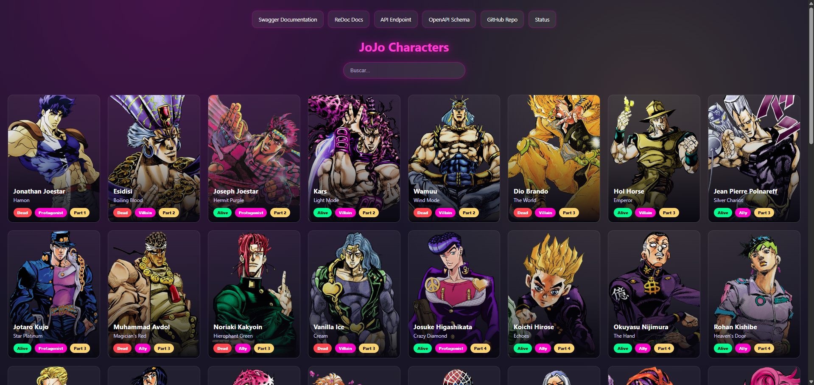
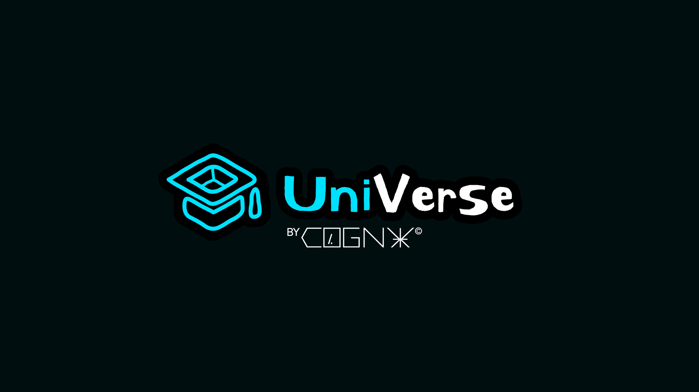

Desenvolvedor Full Stack / Brasil
Rafael
VidaL
Desenvolvendo aplicações modernas, APIs, automações e interfaces
digitais com foco em aprendizado constante, performance, clareza
visual e experiências reais de uso.
Stack
Role
React
Node.js
TypeScript
Python
FastAPI
Flask
SQLite
Lecom
Figma
Automações
01
Sobre
Quem está por trás
Desenvolvedor
em Evolução
Unindo código, Lógica e Design.
Código limpo, interfaces com presença e sistemas que saem do papel com clareza.
Sou o Rafael Vidal, desenvolvedor em formação e uma pessoa que gosta de entender como as coisas funcionam por trás da tela. Tenho interesse por tecnologia, design, organização de sistemas e por transformar ideias meio soltas em algo que alguém consiga usar de verdade.
Meu primeiro contato com lógica foi ainda novinho, na escola, mexendo com Scratch, brincando com os wireds do Habbo Hotel e fazendo circuitos de redstone no Minecraft. Eu não chamava aquilo de programação, mas já era a ideia de montar regras, testar comportamentos e ver uma coisa acontecendo por causa do que eu tinha criado.
Mais tarde, comecei a programar de verdade pelo SENAI, por conta da implementação do novo ensino médio. A escola precisava escolher um curso técnico e, por votação, ADS foi o caminho escolhido. Entrei meio sem saber onde isso ia dar e acabei encontrando uma área que me prendeu de verdade.
Desde então, fui transformando estudo em projetos reais. Hoje construo aplicações web, APIs, automações e experiências digitais, sempre tentando juntar produto, design e engenharia para criar soluções que funcionem bem para quem vai usar.
Meu foco atual é crescer como desenvolvedor full stack. Meus projetos passam por React, JavaScript, Python, Flask, FastAPI, SQLite, integrações externas, autenticação, dados e uma camada visual bem cuidada.
Mais do que escrever código, eu gosto de construir um produto com intenção.
Rafael VidaL
Rafael Vidal
Desenvolvedor full stack em formação
Desenvolvedor full stack em formação
02
Tecnologias
Ferramentas
Habilidades Técnicas
Tecnologias que uso para desenvolver aplicações web, APIs, interfaces modernas, automacoes, dashboards e protótipos SaaS.
Também estudo arquitetura de software, engenharia de APIs e segurança de aplicações.
03
Projetos
Portfolio
Meus Projetos
Experimentos, estudos e entregas reais onde transformo lógica, interface e backend em produto.

001
EcoWay
Projeto acadêmico da Facens para UPX III: plataforma para rotas de veículos elétricos com autonomia inteligente, estações compatíveis, planejamento seguro e APIs externas.
- React
- Flask
- SQLite
- OpenRouteService

002
Salute Studio Pilates
Site institucional para estúdio de pilates em Salto, com apresentação do espaço, diferenciais, localização e chamada direta para agendamento da primeira aula.
- Site institucional
- UX/UI
- Responsivo

003
JoJo API
API de personagens de JoJo's Bizarre Adventure, utilizando dados da API do JoJo
- FASTAPI
- PYTHON
- SQLITE
- JAVASCRIPT
- API REST
- SWAGGER

004
UniVerse (em breve)
Sistema academico full-stack desenvolvido pela Cogni, com RBAC em 8 perfis, matriculas, notas, frequencia, horarios e documentos.
- React
- Bun/Elysia
- Drizzle
- RBAC
- SQLite
04
Experiência
Carreira
Experiência &
Formação Acadêmica
Cada etapa da minha formação fortaleceu minha visão sobre tecnologia, produto e desenvolvimento de soluções úteis.

Experiência

Jovem Aprendiz de TI
Eucatex · Aprendiz
mar de 2026 - o momento · Salto, São Paulo · No local
Formação acadêmica

Centro Universitário Facens
Curso Superior de Tecnologia (CST), Análise e Desenvolvimento de Sistemas
mar de 2025 - o momento
Formação técnica

SENAI "Italo Bologna" - Itu/SP
Curso Técnico em Análise e Desenvolvimento de Sistemas
jan de 2023 - dez de 2024 · Curso técnico com C.H. de 1200 horas
05
Estudos
Agentes e Engenharia de IA
Estudo de agentes inteligentes, automacoes, fluxos com IA (N8N, Make) e integracao de modelos em sistemas reais.
APIs, Node.js e Express
Aprofundamento em APIs escalaveis, padroes de backend, autenticacao e integracoes.
BPM e Automacoes
Estudo e pratica com formularios, fluxos de aprovacao, regras de negocio e automacoes em processos corporativos.
06
Contato
Seu projeto pode começar aqui!
Tem alguma ideia na
sua mente?
Aberto para projetos, parcerias e ideias que precisem virar algo real. Trabalho com interfaces, APIs e sistemas web com foco em visual, lógica e experiência de uso.
WhatsApp direto